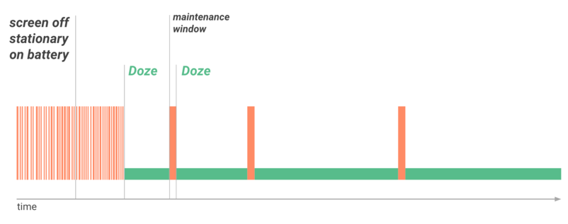

简介
- 从Android 6.0开始，Android提供了两种省电延长电池寿命的功能：Doze和App Standby；
- 表现形式：当设备没有连接到电源，设备进入 Doze 模式时，系统将通过延迟最近用户没有使用的应用程序的后台 CPU 运作及网络活动，让应用程序处于 App Standby 状态，以此来减少电池消耗。谷歌表示，在 Nexus5 和 Nexus6 上测试，当屏幕处于关闭状态，平均续航时间提高 30%；
- 版本要求： Android6.0 （ API level 23 ）及其更高版本；
- 开发者影响：为了保证用户的最佳体验，开发者有必要在 Doze 和 App Standby 模式下测试应用程序，及其对代码进行相应的调整
Doze
设备进入 Doze 睡眠模式条件
- 用户不操作设备一段时间
- 屏幕关闭
- 设备未连接电源充电
首先有一个小时的等待期，屏幕关闭后半小时开始进行『大幅度运动监测』，接下来半小时内无大幅度运动才会进入Doze Mode。（所以这个模式基本上在晚上才有较大几率触发）
Doze 模式下应用程序有什么变化
- 系统试图通过限制应用程序访问网络和 CPU 密集型服务节省电池；
- 防止应用程序访问网络，推延应用程序的工作，同步，和标准的警报；
- 系统定期提供一个短暂的时间让应用程序完成延迟的工作活动，在这个时间片里，系统将提供维持性窗口应用程序访问网络，运行在等待的同步，工作，和报警等活动。
Doze 模式的五种状态
ACTIVE ：手机设备处于激活活动状态
INACTIVE ：屏幕关闭进入非活动状态
IDLE_PENDING ：每隔 30 分钟让 App 进入等待空闲预备状态
IDLE ：空闲状态
IDLE_MAINTENANCE ：处理挂起任务
如下图所示， Doze 期间提供间隔一小段时间（ 30s ）供应用程序使用网络和处理挂起的活动，且系统进入 Doze 模式后，系统会隔一段时间处理正在挂起的任务，随着时间推移，后面间隔的时间会越来越长，以此来减少电量消耗。

退出 Doze 模式（系统退出休眠，所有的应用程序恢复正常活动）
- 用户唤醒装置移动，打开屏幕
- 或者设备连接电源
Doze的限制
- 网络连接会被禁止
- Wake Lock 会被屏蔽
- AlarmManager 定时任务延迟到下一个 maintenance window 进行处理，除非使用 AlarmManager 提供的方法： setAndAllowWhileIdle() 或者 setExactAndAllowWhileIdle()
- 系统将不扫描热点 WIFI
- 同步工作将被禁止
- 不允许 JobScheduler 进行任务调度
适配 Doze 模式
- Doze 影响到 AlarmManager 闹钟和定时器管理活动，在 Android6.0 引入了两个新方法： setAndAllowWhileIdle() 和 setExactAndAllowWhileIdle() ，调用两个方法可以在 Doze 模式下让系统响应定时任务
- Doze 模式下限制了网络的连接，如果应用程序依赖于实时信息，那么这个将影响 App 的体验。那么你需要使用 Google Cloud Messaging (GCM) 谷歌云消息（后面详细讲解）
Standby
当用户不触摸使用应用程序一段时间时，该应用程序处于 App Standby 状态，系统将把该 App 标志为空闲状态。除非触发以下任意条件，应用程序将退出 App Standby 状态：
- 用户主动启动该 App;
- 该 App 当前有一个前台进程（或包含一个活动的前台服务，或被另一个 activity 或前台 service 使用）;
- App 生成一个用户所能在锁屏或通知托盘看到的 Notification, 而当用户设备插入电源时，系统将会释放 App 的待机状态，允许他们自由的连接网络及其执行未完成的工作和同步。如果设备空闲很长一段时间，系统将允许空闲 App 一天一次访问网络。
Doze 和 App Standby 的区别
Doze 模式需要屏幕关闭（通常晚上睡觉或长时间屏幕关闭才会进入），而 App Standby 不需要屏幕关闭， App 进入后台一段时间也会受到连接网络等限制。
GCM
Google Cloud Messaging(GCM) 是一个云到设备的服务，可以让你支持实时在云端服务和 Android 设备上应用程序之间的消息传递。
GCM 提供了一个持久连接到云端的链接，让所有需要实时消息传递应用程序可以共享此链接。这个共享链接显著优化电池消耗，使其不必让多个应用程序各位维护自己单独的持久链接而使电池迅速耗尽。
由于这个原因，官方建议：如果你的应用需要消息传递与后端服务集成，我们强烈建议尽可能的使用 GCM ，而不是单独维护自己的网络链接。
GCM 消息拥有高优先级，不影响 Doze 模式，且不会不影响其他应用程序的状态。这意味着你的应用程序可以使用它们进行通信，同时最大限度地减少电池在整个系统和设备的影响。
Doze 白名单
除了 GCM ， Android6.0 及更高版本还提供了 Doze 模式白名单列表，通过设置应用程序进入白名单列表可逃脱 Doze 模式的各种限制。
检测应用程序是否存在白名单 list 里面，可使用 PowerManager 的 isIgnoringBatteryOptimizations() 方法。
用户也可手动设置应用程序进入白名单列表里面，路径为：设置 > 电池 > 电池优化
客户端使用方法
- App 程序可发送 action 为 ACTION_IGNORE_BATTERY_OPTIMIZATION_SETTINGS 的 intent 引导用户进入设置界面将应用程序设置进白名单列表里。
- 应用程序还可以使用 AREQUEST_IGNORE_BATTERY_OPTIMIZATIONS 权限来触发一个系统对话来让用户添加到白名单里，而无需进入设置界面去设置。
总结
Doze 模式的推出本身是为了减少电池的消耗，且 Google 希望统一使用 GCM 来传递消息进行通讯，而对于国内开发来讲，确实带来了很大的麻烦：
国内开发的一些消息推送机制（ PUSH ）将受到影响；
若使用 GCM ，在国内使用 GCM 延迟高，对于即时通讯产品来说选择还需勇气啊；
国内第三方手机厂商如华为、小米、三星，定制的 Rom 也将使用定制的推送消息机制。这让同一款 App 如何选择哪种推送机制才能兼容呢？
解决方法：
用户添加应用程序到电池优化白名单列表；
开发者使用 Google 提供的 ACTION_IGNORE_BATTERY_OPTIMIZATION_SETTINGS 意图和 AREQUEST_IGNORE_BATTERY_OPTIMIZATIONS 权限设置以此忽略；
使用 Google 提供的 GCM。